DIRECTED by Daria CASCIANI, Marina CARULLI, Pietro DE NARDI, Silvia PERSONENI, Kleant STASA
Giulia D’Alessandro, Laura Moreno, Ester Simonetti, Ahn Thu Huyunh, Caterina Zannoni
Orchestra,
OPERA
for
Fashion Design Studio
Project
MADE FOR TRAVEL.
Comfort and functionality for orchestra members
SEPT ‘25 FEB ‘26
created in Milan, from Rome to Prague
A fashion collection that reimagines the traditional attire of orchestra musicians through the lens of mobility, performance, and modern comfort.
Orchestra players, physical strain in black tie formality.
Each piece pays homage to the elegant, tailored codes of formal wear, fusing them with technical fabrics and design solutions engineered for sharpness and sportswear-like ease.
Whether on a plane, in a practice room, under stage lights, or seated at a post-concert dinner, the garments are made to move, breathe, and transition fluidly with the musician’s rhythm.
/research.
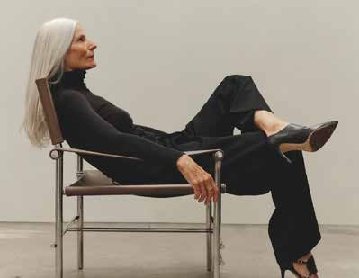
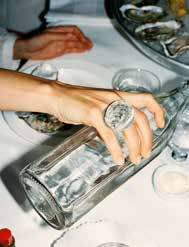
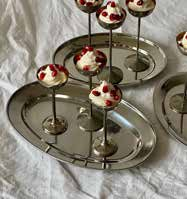
- Name
- Rachel
- Age
- 40
- Status
- Orchestra Director
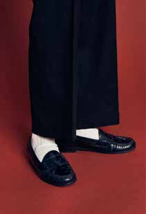
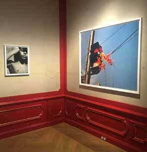
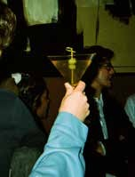
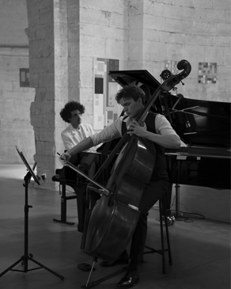
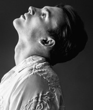
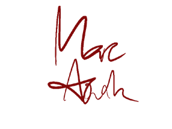
- Name
- Marc
- Age
- 28
- Status
- String Musician
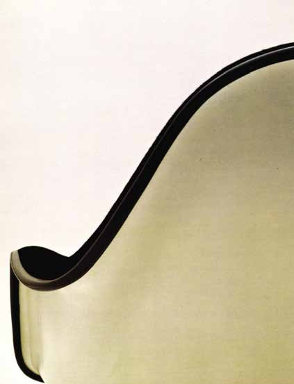
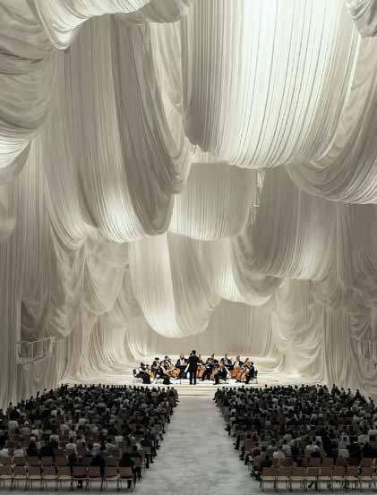
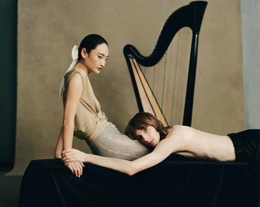
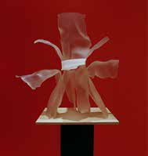
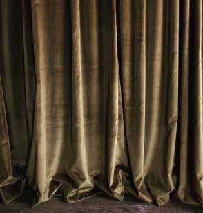
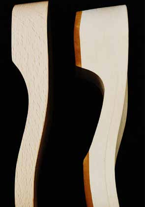
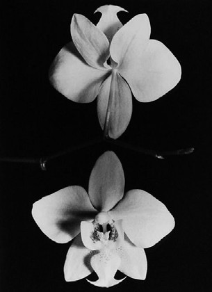
Scene from “Swan Lake” - Tchaikovsky - arr. by CM de Guzman
2 /2
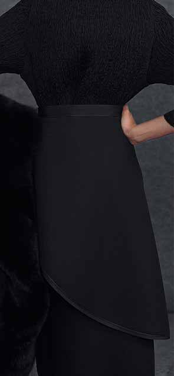
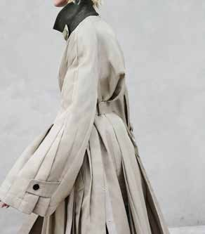
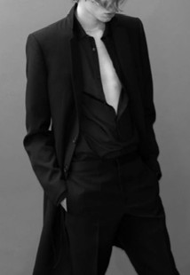
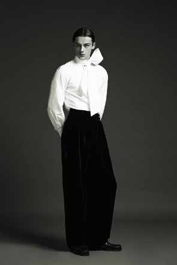
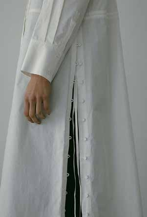
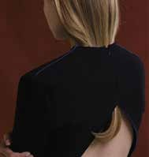
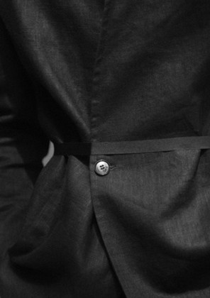
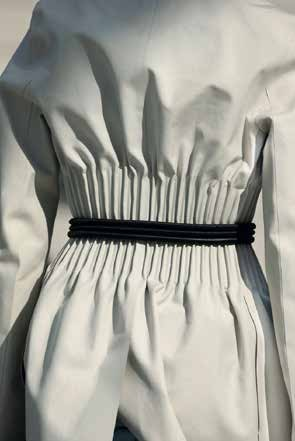
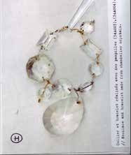
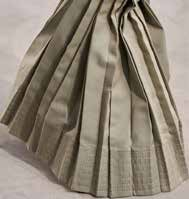
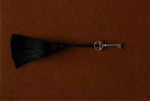
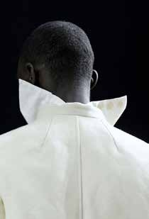
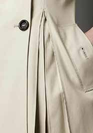
/design.

Armonica is defined by a distinctive pleated construction, developed to create volume, flexibility and controlled shape.
Each pleat is secured with topstitching on both the outside and inside, allowing the garment to move freely while maintaining structure — preventing the pleats from opening too wide or losing their form. This technique enhances mobility and comfort, while preserving a precise, sartorial finish.
The construction is featured in the sleeves of a women’s trench coat and a men’s jacket, where stitching runs through the centre of each fold, and in a men’s shirt and women’s trousers, where stitching follows the pleat edges for a sharper, more graphic definition.
Concertech is the performance-driven line designed for orchestral musicians on stage.
The silhouettes are classic and formal — refined black pieces that read like traditional concertwear from a distance — yet they are engineered with advanced technical fabrics. Stretch, breathability, thermoregulation, odour control and wrinkle resistance are integrated to support long performances, travel, and the physical demands of playing.
Each garment combines elegant tailoring with discreet functional details, offering a professional concert look with the comfort and reliability of technical wear.
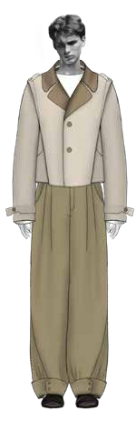

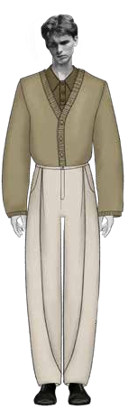
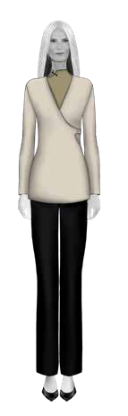
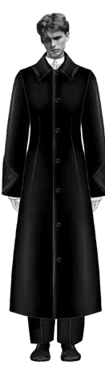
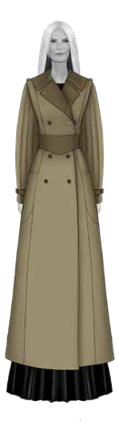
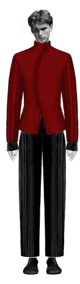
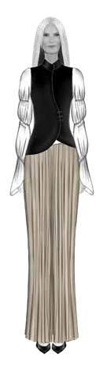
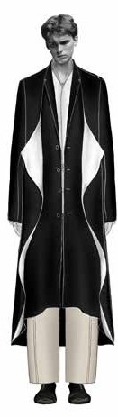
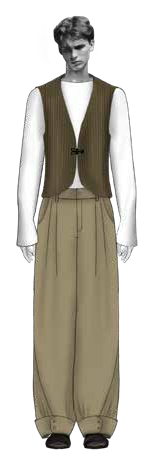
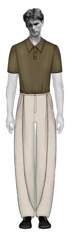

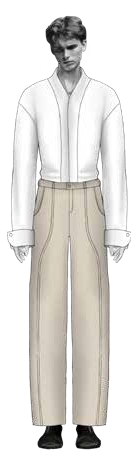
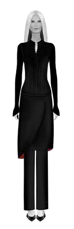
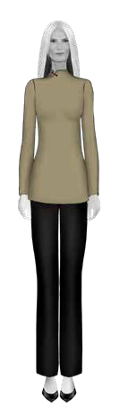
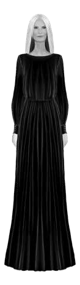
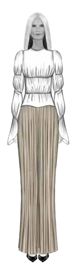


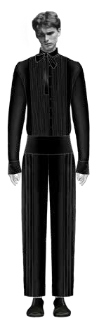


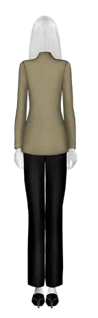
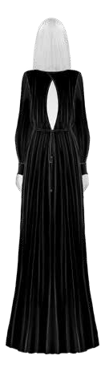
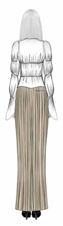
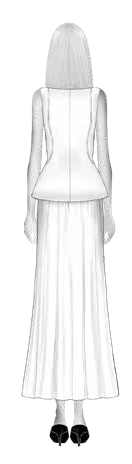
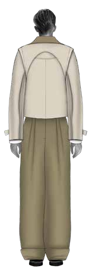